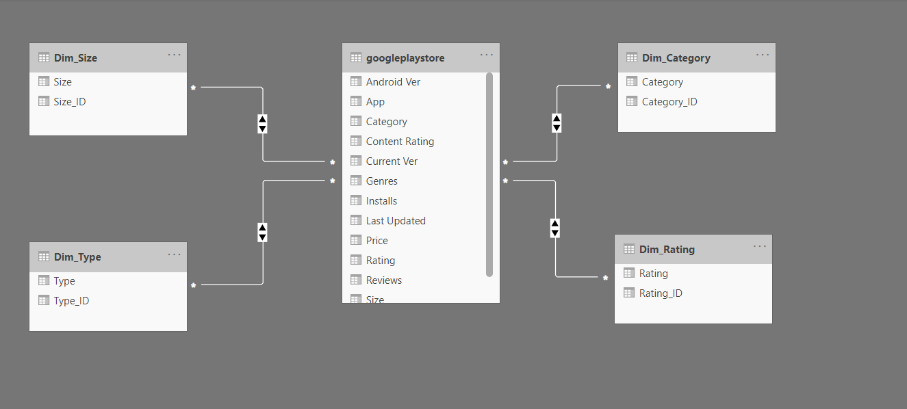
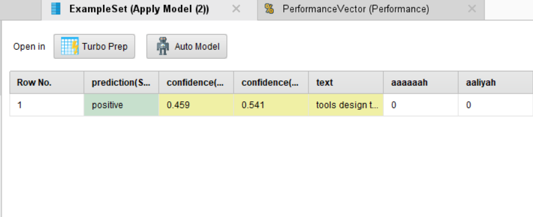
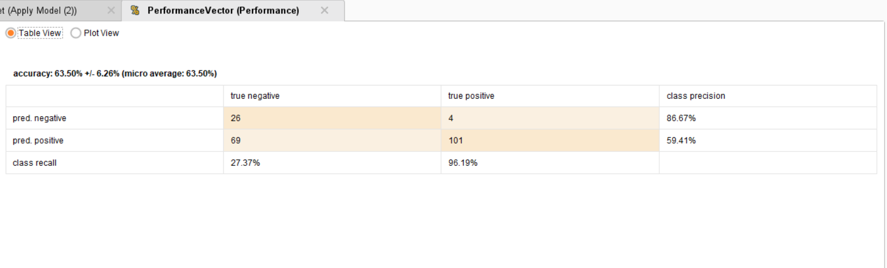

Star Schema
In computing, the star schema is the simplest style of data mart schema and is the approach most widely used to develop data warehouses and dimensional data marts. The star schema consists of one or more fact tables referencing any number of dimension tables.
Sentiment Analysis
Sentiment analysis (also known as opinion mining or emotion AI) refers to the use of natural language processing, text analysis, computational linguistics, and biometrics to systematically identify, extract, quantify, and study affective states and subjective information. Sentiment analysis is widely applied to voice of the customer materials such as reviews and survey responses, online and social media, and healthcare materials for applications that range from marketing to customer service to clinical medicine.
Confusion Matrix
A confusion matrix is a table that is often used to describe the performance of a classification model (or "classifier") on a set of test data for which the true values are known. The confusion matrix itself is relatively simple to understand, but the related terminology can be confusing.
Tableau
Tableau is a powerful and fastest growing data visualization tool used in the Business Intelligence Industry. It helps in simplifying raw data into the very easily understandable format. Data analysis is very fast with Tableau and the visualizations created are in the form of dashboards and worksheets.
Tableau Online (Analytics for everyone, everywhere)
Tableau Online is your analytics platform fully hosted in the cloud. Publish dashboards and share your discoveries with anyone.